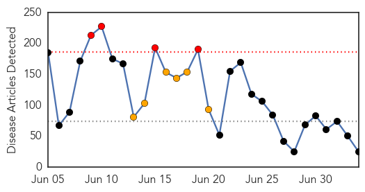
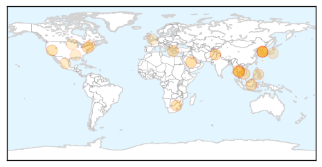

Unknown
30-Day Web Trend
4 alerts, 6 warnings

30-Day Twitter Trend
0 alerts, 2 warnings

Article Locations
Article Confidences

Top Articles:
- 0.999
- Another doctor at Samsung's hospital contracts MERS
- 0.998
- Number of MERS cases rises to 185 in South Korea
- 0.993
- Sudan Vision Daily
- 0.991
- Hospital discharges only Mers case after Omani ruled virus-free
- 0.962
- Take care to avoid tick bites: Sudbury health unit
- 0.947
- Samsung Medical Centre fumbles efforts to shake reputation as MERS epicentre
- 0.917
- Chicago Tribune
- 0.917
- Chicago Tribune
- 0.917
- Chicago Tribune
- 0.917
- Chicago Tribune
- 0.899
- Brain-eating amoeba kills 21-year-old woman in Bishop, Calif.
- 0.863
- Local airports on high alert against MERS
- 0.772
- Thailand's first MERS patient cured
- 0.725
- Social media report on Korean with MERS turns out to be rumor
- 0.696
- a Vaccine Tested on Monkeys Shows Promising Results
- 0.628
- Salmonella outbreak linked to poultry hatchery
- 0.608
- Today's stories from newspapers in Norfolk County
- 0.607
- Rabies down after relaunch of vaccination program
- 0.589
- Tummy troubles: PIMS receives 9,000 gastro patients in 60 days
- 0.568
- The Caledonian-Record
- 0.557
- Salmonella Typhimurium Outbreak Associated with Frozen Chicken Entrees Minnesota 2006
- 0.553
- Infested hospitals called in pest control nearly 5,000 times in one year to tackle vermin
- 0.548
- Taclée par bruno moneroe, amélie neten le clashe sur twitter
- 0.540
- Another baby with HIV may be cured
- 0.502
- People advised to take precautions against heat exhaustion
Top Tweets:
- 0.696
- Es como si un astrofísico quisiera ser exitoso, pero sin «creer» en la teoría de la gravedad. (5/5)
- 0.668
- según ella, tiene su fe religiosa. Esto es un ejemplo de una muchacha que simplemente no va a producir avances en ningún campo de (2/5)
- 0.631
- RT: MERS CoV Health Worker Infograhic Video EN Via http://t.co/ZPDqtiaAKV
Dengue Fever
30-Day Web Trend
5 alerts, 6 warnings

30-Day Twitter Trend
3 alerts, 0 warnings

Article Locations

Article Confidences

Top Articles:
- 0.997
- Hundreds mobilized in campaign against dengue - Maldives
- 0.991
- Singapore dengue fever 2015: Increase in DEN-2 virus could make for a bad season
- 0.985
- City witnesses alarming rise in malaria, dengue cases
- 0.985
- Breakthrough- Antibody against DENV-2 identified and how Dengue virus evolves to spread efficiently
- 0.917
- Aden’s infirm dread a hospital visit most of all
- 0.911
- Vigilance urged as Taiwan ...｜Society｜WCT
- 0.845
- Dengue surveillance ordered during Eid holidays
- 0.842
- More dengue cases reported in Bishan North
- 0.738
- Dengue watch prompts ban on OTC sale of anti-inflammatory meds
- 0.692
- Asia Briefs: Dengue cases prompt warning in HK, Asia News & Top Stories
- 0.682
- Dengue preparedness: Over-the-counter sale of painkillers to be banned
- 0.644
- Leptospirosis kills 2 this month
Top Tweets:
-
No tweets found for Jul 04, 2015